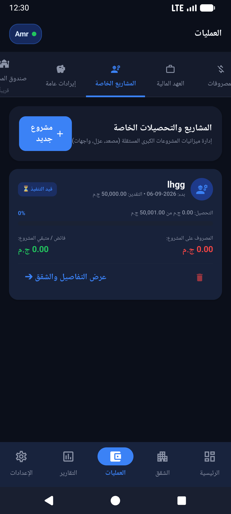
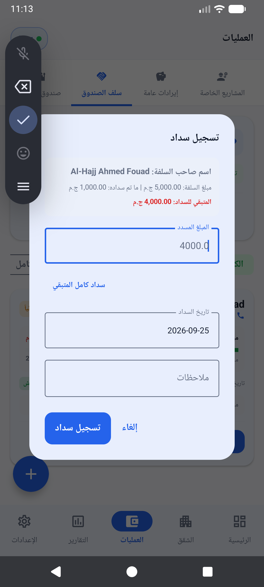

إدارة صيانة العمارة، تعمير المصاعد، والمشاريع الاستثنائية بوضوح تام
عندما تحتاج العمارة إلى صيانة شاملة للمصعد (أوفر هول)، أو دهان للواجهة، أو استبدال طلمبة المياه، تتحول المحاسبة العادية إلى عبء ثقيل. يقدم لك تطبيق صندوق العمارة نظاماً متكاملاً لإدارة مشاريع الصيانة المستقلة وحساب حصة كل شقة وسد عجز السداد عبر سلفة الصندوق.

واجهة إدارة المشاريع ومتابعة تحصيل حصص الوحدات في التطبيق
أكبر تحديات صيانة العمارات وكيف يحلها التطبيق
في أغلب العمارات، يقع أمين الصندوق في معضلة عندما يتوقف المصعد فجأة أو تحتاج العمارة لإصلاح عاجل:
- خلط أموال الصيانة الدورية بالمشاريع: يؤدي دمج تكلفة تعمير المصعد مع مصاريف النظافة والكهرباء الشهرية إلى اختلال ميزانية الصندوق وعجز الحسابات.
- تأخر بعض الملاك في سداد حصتهم: يرفض الفني بدء العمل قبل استلام الدفعة المقدمة، بينما يتأخر بعض السكان في دفع حصتهم المستحقة.
- صعوبة إثبات من دفع ومن تأخر: تتكرر الأسئلة في مجموعات واتساب العمارة: "مين دفع ومين لسه؟ وفاضل كام على التكلفة؟".
يقوم تطبيق صندوق العمارة بفصل المشاريع الاستثنائية تماماً عن الخزينة الدورية، مع إتاحة إنشاء مشروع مخصص برقم مالي وتكلفة إجمالية وتحديد حصة كل شقة.
ميزة "سلفة صندوق العمارة": حل مشكلة نقص السيولة عند بدء العمل
أحد أبرز الابتكارات العملية داخل التطبيق هو نظام سلفة صندوق العمارة للمشروع.
كيف تعمل سلفة الصندوق؟
إذا كانت تكلفة صيانة المصعد 10,000 جنيه، وتم تحصيل 7,000 فقط من السكان المستجيبين بينما يتبقى 3,000 متأخرة على شقق مسافرة أو غير متوفرة، يمكنك تحويل 3,000 كـ سلفة من خزينة العمارة العامة إلى حساب المشروع لإكمال الدفع للفني وتشغيل المصعد فوراً. يسجل التطبيق هذه السلفة بوضوح، وحين يقوم الملاك المتأخرون بسداد حصصهم، تُرد المبالغ تلقائياً إلى الخزينة الرئيسية دون أدنى لخبطة!

مزايا نظام المشاريع والصيانة في تطبيق صندوق العمارة
- تحديد تكلفة المشروع وحصة الشقة: إمكانية تحديد تكلفة متساوية أو مختلفة بحسب الاتفاق المعتمد في اتحاد الشاغلين.
- إيصال سداد فوري للمشروع: بمجرد سداد صاحب الشقة لحصته، يمكنك مشاركة إيصال استلام رسمي يحمل اسم المشروع ورقمه وتاريخه عبر واتساب.
- تقرير إنجاز وتحصيل المشروع: كشف حساب بصيغة PDF يوضح إجمالي التكلفة، المحصل، المتبقي، وقائمة الشقق المسددة والمتأخرة.
- أرشفة الفواتير ومصروفات المشروع: تسجيل كل ما يُصرف على الخامات وفنيي الصيانة وربطه بالمشروع لتوثيق المصروفات بدقة.
ابدأ تنظيم صيانة عمارتك باحترافية
لا تدع مشاريع العمارة تتعطل بسبب الخلافات المحاسبية ونقص السيولة المؤقت. نظّم حساباتك في دقائق من هاتفك الأندرويد.